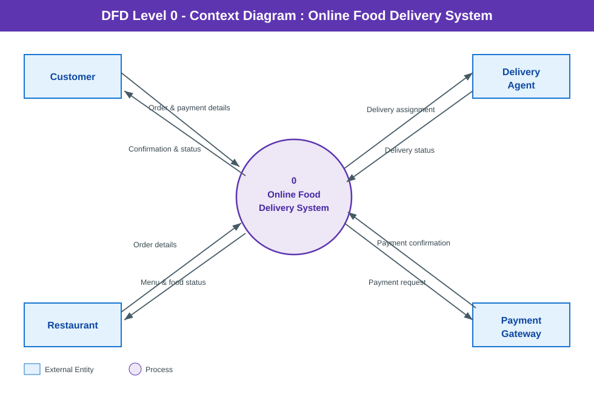

DFD Level 0 — Context Diagram
Food Delivery


What it shows
The whole system drawn as a single process bubble, so you can see its scope: who talks to it and what data crosses the boundary. Nothing about the internals is shown yet.
Symbols used
- Circle = process
- Rectangle = external entity
- Labelled arrow = data flow
Key points
- Exactly one process, numbered
0— this is the rule for a context diagram. - No data stores appear at Level 0, because stores live inside the system and the system is still a black box.
- Four external entities: Customer, Restaurant, Delivery Agent and Payment Gateway.